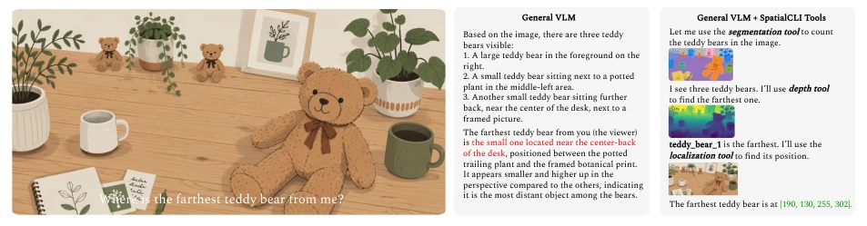
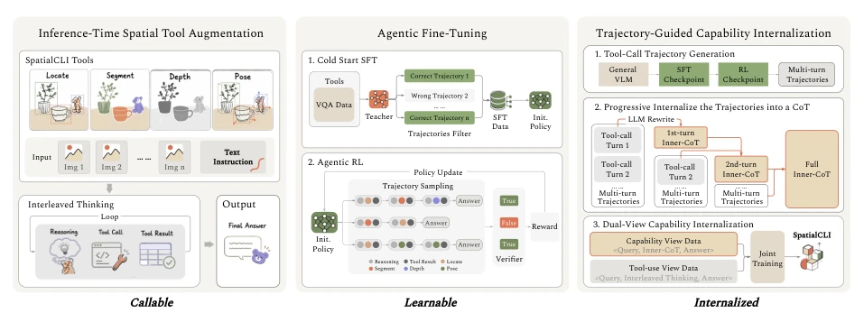
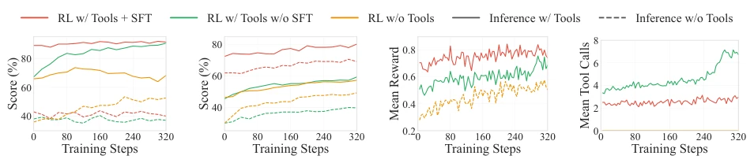

SpatialCLI's "borrow then return" strategy is quite clever. VLMs handling spatial reasoning have always been a typical case of "high aspirations but low practical skills": excellent at semantic understanding, but asking it to find the "farthest teddy bear" exposes its flaws. The authors did not rush to make the model learn directly, but first used external tools like SAM 3 [4], Depth Anything 3 [25] as "external tools", then trained the model to learn how to use these external tools, and finally "sucked" the external capabilities into the model parameters. This is more pragmatic than pure SFT or RL, after all, teaching a large model to learn depth estimation directly is not as good as teaching it to call depth tools. However, this method has a hidden danger: if the tool itself is inaccurate, does the model internalize "hallucination" or "truth"? Moreover, relying on structured output raises doubts about scalability for multimodal generation. Overall, this is a targeted remedy for embodied intelligence to supplement "spatial blindness", but the duration of the drug effect still depends on long-term testing.
Embodied intelligence entering open environments, task success depends on combining multiple spatial perception capabilities, rather than single capability improvement [21, 63]. General VLMs are good at task decomposition, but unreliable in precise localization and depth measurement; specialized vision models (e.g., SAM 3 [4]) can provide precise evidence, but cannot understand task requirements or combine outputs. Existing systems like SpaceTools [7], AlloSpatial [37] although introducing tools, did not solve the "tool dependency" problem, model capabilities drop sharply after leaving tools. The core contradiction lies in: Can perceptual evidence accumulated through tool interaction be converted into internal VLM capabilities? SpatialCLI aims to fill this gap, allowing VLMs to both call tools and internalize capabilities, becoming native models of the physical world.

Figure 1 A conceptual comparison of a general VLM with and without SpatialCLI Tools.
The framework is divided into three stages. 1. Call: Inference enhancement. Register localization, segmentation, depth, pose models as tools, VLM calls based on ReAct framework, records trajectories. 2. Learn: Agent fine-tuning. First use cold-start SFT to establish basic calling behavior (based on Qwen3.5-397B-A17B [35] teacher trajectories), then use Agentic RL (GRPO [39]) to optimize planning and decision-making, give rewards based on task results. 3. Internalize: Trajectory-guided capability internalization. Convert successful trajectories into explicit perceptual reasoning chains (CoT), through Dual-View training: Capability-Internalization View learns tool-free reasoning, Tool-Use View retains tool calling strategy. Loss function joint optimization, ensuring internalized capabilities do not sacrifice tool usage. This process converts external expert capabilities into internal model parameters, achieving "tool-free reasoning". Additionally, through Progressive Verbalization, gradually integrate evidence, avoid long context dependency, ensure reasoning chain coherence.

Figure 2 Overview of SpatialCLI. Its Call, Learn, and Internalize stages progressively transform specialist perceptual capabilities into callable spatial tools, learnable tool-use policies, and internalized model capabilities.
Construct SpatialCLI-Bench (516 questions, 6-choice), covering localization, segmentation, depth, pose. Baselines include GPT-5.6 Sol, Gemini 3.1 Pro [11], etc. Qwen3-VL-8B-Instruct after cooperating with tools rose from 29.3% to 84.6%, after tool-free internalization reached 73.8%, surpassing GPT-5.6 Sol. Ablation shows structured return is better than pure visual, dual-view training balanced internalization and tool usage. RL training shows SFT can stabilize tool calling strategy, avoid RL early exploration failure. Data scaling shows internalized capability improves with data volume increase, and larger model capacity better internalization effect.

Figure 3 Training dynamics of Qwen3-VL-8B-Instruct under different RL strategies. (a,b) Inference w/ Tools (solid) and Inference w/o Tools (dashed) scores on SpatialCLI-Bench and MindCube. (c) Training reward over RL training. (d) Number of executed tool calls per trajectory over RL training. We compare RL w/ Tools + SFT, RL w/ Tools w/o SFT, and RL w/o Tools.